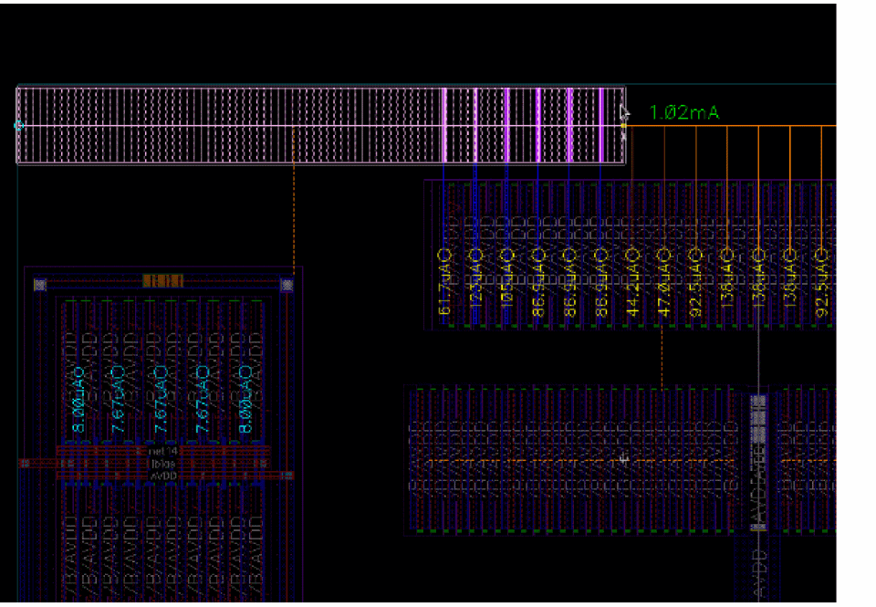
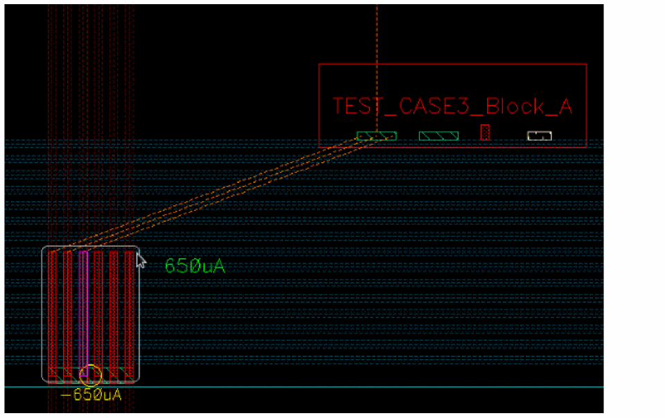
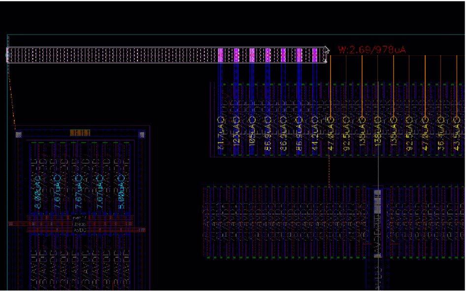
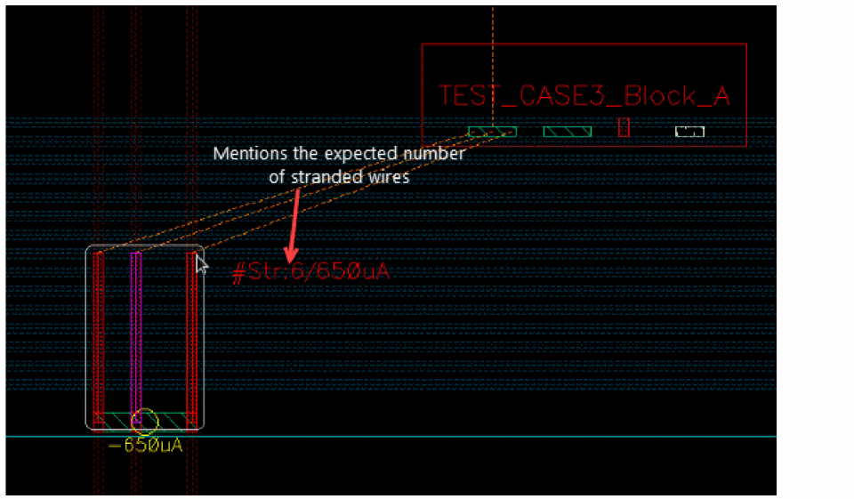
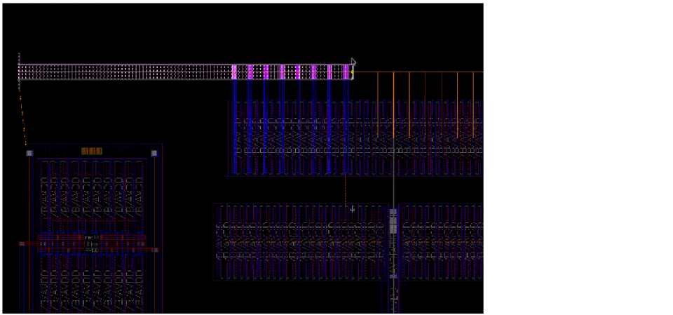
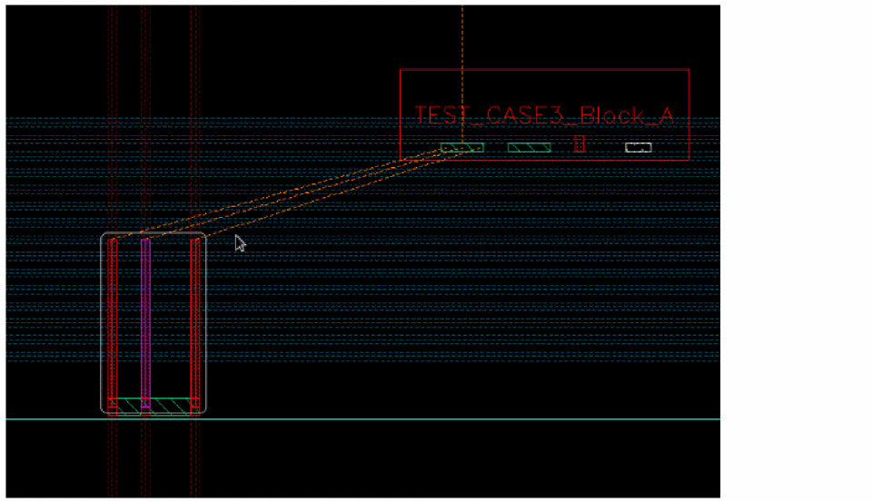

Checker Modes
You can specify a checker mode to be used for current and resistance estimation. The following checker modes are available: Checker Mode: Enforce, Checker Mode: Notify, and Checker Mode: Off. These are described as follows.
Environment variable: weSdrCheckMode
Using Enforce Checker Mode
The enforce mode estimates the current in the edited wire and vias and automatically calculates the wire width to avoid EM or maxResistance violations.
Lets see the difference in the Enforce checker mode when specified for current estimation using the Create Wire and Create Stranded Wire commands and for resistance estimation.
-
Result of Enforce Mode Using the Create Wire Command
The width of the wire and vias is automatically adjusted to avoid EM violations. The adjusted width respects theminWidthconstraint and the width defined in the Wire Assistant. When starting from a pin, if the wire width required to avoid EM violations is smaller than the pin width and if the Use Width – Tap Shapes and Pins Width option in the Create Wire context-sensitive menu is enabled, then the wire matches the pin width. However, if the Tap Shapes and Pins Width option is disabled or the width required to avoid EM violations is larger than the pin width, then the estimated width is used.
The estimated current of the wire is displayed using the color coding based on the color settings for EAD EM violations. The color is computed to represent the EM violation that will be reported by the EAD checker after routing. The text in green in the following figure indicates that there is no EM violation and the current density check is satisfied.
 -
Result of Enforce Mode Using the Create Stranded Wire Command
The number of stranded wires is automatically adjusted to avoid EM violations. The estimated current of the wire is displayed using the color coding based on the color settings for EAD EM violations. The color is computed to represent the EM violation that is reported by the EAD checker after routing. The text in green, in the following figure, indicates that there is no EM violation and the current density check is satisfied.
If you change the number of stranded wires, then the checker mode is automatically updated to Notify. Also, the label color of the estimated current of the stranded wires is changed. The label color of the estimated current indicates that the number of stranded wires is either more or less than required.
Using Notify Checker Mode
The notify mode estimates the current in the edited wire using a color coding based on EAD EM violations color settings.
Lets see the difference in the Notify checker mode when specified for current estimation and when specified for resistance estimation.
-
Result of Notify Mode Using the Create Wire Command
The default width of the wire is considered. You can also specify the width of the wire in the Create Wire form. The wire and vias provide the feedback using the label color, which displays the estimated current in the edited wire. Also, note that the width of the wire and via is not updated automatically and the EM violation can continue to exist. The text in red reports an EM violation.
 -
Result of Notify Mode Using the Create Stranded Wire Command
The required number of stranded wires are displayed without changing the number of stranded wires. Because the number of stranded wires is not changed automatically, the EM violation continues to exist. You can specify the number of stranded wires in the Create Stranded Wire form. The stranded wires provide the feedback using the label color, which displays the required number of stranded wires for the estimated current. The text in red reports an EM violation.

Using Off Checker Mode
The Off mode does not update the wire width and there is no feedback on the estimated current or resistance.
Lets see the difference in the Off checker mode when specified for current estimation using the Create Wire and Create Stranded Wire commands, and for resistance estimation.
-
Result of Off Mode Using the Create Wire Command
The Create Wire does not update the width nor does it provide any current feedback.
 -
Result of Off Mode Using the Create Stranded Wire Command
The number of stranded wires is not updated, nor does it provide any current feedback.

Related Topics
Running Interactive SDR Current Density Checks
Return to top